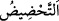

86. Madem ki cezâ görmeyecekmişsiniz,
Yâni madem ki siz bir Rabbin terbiyesinde ve bir Melik’in mülkiyetinde zelil ve hakir
kimseler değilsiniz… Bu mânâya göre medînîn kelimesi, “sultan raiyyesini yönetip
kendine boyun eğdirdi” anlamındaki dâne fiilinden alınmıştır. Müfredat adlı eserde ise
medînîn kelimesi, “cezâ görmeyecekmişsiniz” şeklinde îzâh edilmiştir. Zîra din
kelimesi cezâ mânâsına da gelir.
Bu âyet-i kerîme mânâ itibariyle “Sizi biz yarattık. Tasdik etmeniz gerekmez mi?”
(el-Vâkıa 56/57) âyetine bakar. Çünkü levlâ, hellâ, ellâ gibi harflerle yapılan
(tahdîd; bir şeyi yapmaya teşvik etmek), hakkında teşvikte bulunulan şeyin kesinlikle
yokluğunu çağrıştırır.
87. Onu (canı) geri çevirsenize, şayet iddiânızda doğru iseniz!
“Onu (canı) geri çevirsenize,” Yâni, çıkan canı yerine döndürsenize, ölünüzün çıkan
rûhunu bedenine çevirsenize. Âyette geçen “iâde etmek, çevirmek” anlamındaki fiil, rac’
masdarındandır. Birinci ve ikinci levlâ’nın âmili olan
fiili onların âcizliklerini
pekiştirmekte ve şartın cevâbını göstermektedir. Bu durumda âyetin mânâsı şöyledir.
Bizim sizi yarattığımıza inanmadığınızdan anlaşıldığı üzere Rabbe boyun eğen kimseler
değilseniz, boğaza dayanan canı önceden durduğu yerine döndürsenize, eğer bu
“iddiânızda doğru iseniz!”
Şübhesiz ki, onların Allah’ın kendilerini yaratmış olduğunu tasdîk etmemeleri, aynı
zamanda Allah Teâlâ’nın yaratıcı olmadığını tasdîk etmekten ibarettir. Madem ki, sizin
çıkan canı önceki yerine gerisin geri çevirmeniz mümkün değildir, öyleyse iyi biliniz ki,
bu iş başkasının kudreti dahilindedir. O da Allah Teâlâ’dır. Öyleyse O’na îman ediniz.
Buradaki şart, mânâyı pekiştirmek içindir. Bir önceki şartın itirâzı değildir. Çünkü
burada böyle olmasının bir mânâsı yoktur.
88. Fakat (ölen kişi Allah’a) yakın olanlardan ise,
Âyette kasdedilen yakınlık Arş-ı ilâhiye olan derecelerinin yakınlığıdır; sapık mezhep
olan Haşevîlerin dediği gibi cihet/yön bakımından değildir. Bu âyet-i kerîme, vefat eden
bir insanın ölmek üzereyken olan hâlini açıklamanın ardından öldükten sonraki